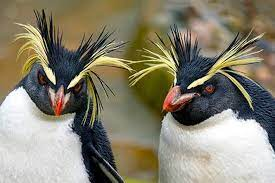
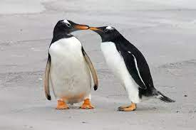

Пингвины- семейство нелетающих морских птиц, единственное современное в отряде пингвинообра́зных
(Sphenisciformes). В него включают 18 современных видов. Все представители этого семейства хорошо плавают и
ныряют.
Форма тела пингвинов обтекаемая, что идеально для передвижения в воде. Мускулатура и строение костей
позволяют им использовать под водой крылья как винты. В отличие от других нелетающих птиц, пингвины имеют
грудину с чётко выраженным килем, к которому крепится мощная мускулатура. Плавание под водой отличается от
полёта в воздухе тем, что на подъём крыла затрачивается та же энергия, что и на опускание, поскольку
сопротивление воды больше, чем сопротивление воздуха, поэтому лопатки пингвинов имеют по сравнению с другими
птицами бо́льшую поверхность, на которой крепится мускулатура, отвечающая за подъём крыла. Плечевая кость и
кость предплечья соединены в локте прямо и неподвижно, что увеличивает стабильность крыла. Грудная
мускулатура развита и составляет иногда до 30% массы тела, что в несколько раз превышает аналогичное
соотношение у самых мощных летающих птиц. Бедренные кости очень короткие, коленный сустав неподвижен, а ноги
заметно смещены назад, что является причиной необычно прямой походки. Большие ступни с плавательной
перепонкой сравнительно коротки — находясь на суше, животные зачастую отдыхают, стоя на пятках, при этом
жёсткое хвостовое оперение служит им дополнительной опорой. Хвост пингвинов сильно укорочен, поскольку
рулевую функцию, которую он обычно имеет у других водоплавающих птиц, у пингвинов выполняют в первую очередь
ноги. Второе явное отличие пингвинов от других птиц — плотность костей. У всех птиц кости трубчатые, что
делает их скелет легче и позволяет летать или быстро бегать, а у пингвинов они похожи на кости млекопитающих
(дельфинов и тюленей) и не содержат внутренних полостей. У пингвинов жёсткие перья, которые плотно покрывают
их тело.

У некоторых видов пары образуются на всю жизнь, и участие в воспитании потомства принимают оба родителя; однако
у большинства видов гусеобразных пары образуются только на один сезон, причём самец никакого участия в
насиживании и кормлении птенцов не принимает. Гнёзда гусеобразных расположены у водоёмов, в береговых зарослях,
кустах и в тростнике (некоторые гнездятся в дуплах, в земляных норах или на островках). Как правило, гнездо
изнутри выстлано пухом, который самка выдёргивает из своего живота.
В кладке от 2 до 15 яиц, чаще больше пяти. Яйца одноцветные, чаще белого цвета или зеленоватые. Насиживание
длится более 25 дней. Вылупившиеся птенцы уже покрыты пухом и через несколько часов способны бегать, плавать и
даже самостоятельно кормиться. Самка (реже — оба родителя) присматривает за ними и в случае опасности
самоотверженно защищает. Птенцы начинают летать в возрасте около 2 месяцев, у крупных видов — к 3,5—4 месяцам.
Половозрелость наступает на втором-третьем году жизни.
Пингвины питаются рыбой — серебрянкой антарктической (Pleuragramma antarcticum), анчоусами (Engraulidae) или
сардинами (семейство Сельдевые), а также ракообразными, такими как эуфаузииды, криль и мелкими головоногими, на
которых они охотятся, проглатывая прямо под водой.
Виды, питающиеся мелкими ракообразными, в большей степени нуждаются в регулярности питания, чем пингвины,
питающиеся рыбой, но на ловлю добычи они тратят гораздо меньше энергии: если последним достаточно одной удачной
попытки из десяти, первые должны поймать до шестнадцати рачков за одно погружение — в пересчёте приблизительно
один рачок каждые шесть секунд — чтобы восполнить затраты энергии свои и своих детёнышей.
Во время линьки, а у некоторых видов (пингвины Адели, императорские, антарктические и хохлатые пингвины) также и
в период высиживания птенцов, животные вынуждены полностью отказаться от пищи. Этот период у разных видов имеет
разную продолжительность — от одного месяца у пингвинов Адели и хохлатых до трёх с половиной месяцев у самцов
императорских пингвинов. Птицы теряют до половины массы тела, поскольку вынуждены брать энергию для обмена
веществ из запасов жира, накопленных заранее. Самцы и самки субантарктических, великолепных, малых и ослиных
пингвинов сменяют друг друга при высиживании птенцов, это позволяет им голодать только в период линьки.
Пингвины пьют в основном морскую воду. Избыток соли выделяется через специальные железы, находящиеся над
глазами.